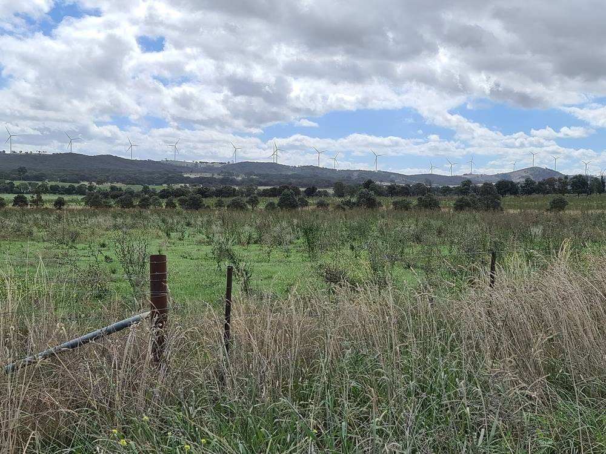

호주 연구진 "재생에너지 지역 혜택, 반짝 지원 말고 오래 남는 유산으로"…지역기금 2030년 2억1,300만 호주달러 전망

시드니공과대 분석 "지역 고용 효과 아직 뚜렷하지 않아"…원주민 지분·수익 5% 공유 입찰, 지역 훈련, 영농형 태양광 계획 인정 제안
호주 시드니공과대(UTS) 지속가능미래연구소 연구진이 재생에너지 사업이 들어서는 지방에 실제로 무엇이 남는지 따져 본 분석을 내놓고, 일회성 지원을 넘어 오래 가는 지역 발전으로 방향을 바꿔야 한다고 제안했다. 연구진에 따르면 사업자가 해마다 지역에 내는 공동체 혜택기금은 이제 표준이 됐고, 청정에너지협의회는 그 규모가 2030년 2억1,300만 호주달러, 2050년 19억 호주달러에 이를 것으로 내다봤으며, 뉴사우스웨일스·퀸즐랜드·빅토리아주는 흩어진 소액 지원 대신 기금을 모아 큰 지역 사업에 쓰는 쪽으로 정책을 바꾸고 있다. 반면 뉴잉글랜드 재생에너지구역 개발사들은 일자리의 28%만 지역 주민으로 채울 것으로 예상했고, 연구진은 고용으로 지역 경제가 크게 달라졌다는 증거는 아직 없다고 지적했다. 원주민 공동체 몫은 들쭉날쭉했지만, 2026년 도입된 연방 제도가 입찰 물량 일부를 지분이나 수익 5%를 원주민과 나누는 사업에 따로 배정하면서 강한 유인이 생겼다고 연구진은 평가했다. 땅을 둘러싼 갈등과 관련해서는 풍력·태양광에 필요한 면적이 2049~50년 1만1,311㎢로 국토의 0.15% 수준이라며, 원주민 지분 참여 확대와 지역 훈련 투자, 영농형 태양광을 토지 계획에서 인정하고 시범사업을 지원할 것을 주문했다.
시민에너지 관점
호주 주민들이 "반짝 단맛이 아니라 오래 남는 유산"을 원한다는 말은 지원금만으로는 주민 마음을 얻을 수 없다는 경고다. 기금이 2050년 19억 호주달러로 커져도 사업 소유가 외부에 있으면 지역에 남는 것은 나눠 주는 돈뿐이고, 원주민 지분 5% 배정처럼 소유 자체를 나눌 때 지역의 태도가 바뀐다. 재생에너지가 농지와 경관을 빼앗는다는 우려에도, 주민이 주인이 되어 입지와 이익 배분을 함께 정하는 구조가 가장 확실한 답이다. 우리도 발전사업 입찰과 계획입지에서 주민 지분 참여를 가점이 아니라 기본 조건으로 만들어야 한다.
출처: The Fifth Estate(360info 게재) 2026-11-10 Chris Briggs·Saori Miyake·Elianor Gerrard(시드니공과대) 원문 보기
창간 전 시험 발행 기사입니다.
豪研究者「再エネの地域便益は一時的な支援でなく長く残る遺産に」…地域基金は2030年に2億1,300万豪ドルの見通し
シドニー工科大学の分析「地元雇用の効果はまだはっきりしない」…先住民への持ち分・収益5％共有の入札枠、地元研修、営農型太陽光の計画上の位置づけを提案
オーストラリアのシドニー工科大学（UTS）持続可能な未来研究所の研究者が、再生可能エネルギー事業が立地する地方に実際に何が残るのかを検証した分析を発表し、一時的な支援を超えて長続きする地域発展へと方向を変えるべきだと提案した。研究者によると、事業者が毎年地域に拠出するコミュニティ便益基金はいまや標準となり、クリーンエネルギー協議会はその規模が2030年に2億1,300万豪ドル、2050年に19億豪ドルに達すると見込んでいる。ニューサウスウェールズ・クイーンズランド・ビクトリアの各州は、散発的な少額助成の代わりに基金を束ねて大きな地域事業に充てる方向へ政策を転換しつつある。一方、ニューイングランド再エネ区域の開発事業者は雇用の28％しか地元住民で埋まらないと予想しており、研究者は雇用によって地域経済が大きく変わったという証拠はまだないと指摘した。先住民コミュニティへの便益はまちまちだったが、2026年に導入された連邦制度が入札容量の一部を持ち分や収益の5％を先住民と分け合う事業に別枠で割り当てたことで、強い誘因が生まれたと研究者は評価した。土地をめぐる対立については、風力・太陽光に必要な面積は2049〜50年に1万1,311平方キロと国土の0.15％程度だとしたうえで、先住民の持ち分参加の拡大、地元研修への投資、営農型太陽光を土地計画で認め実証事業を支援することを求めた。
市民エネルギーの視点
オーストラリアの住民が「一時的な甘味ではなく長く残る遺産」を望むという言葉は、助成金だけでは住民の心はつかめないという警告だ。基金が2050年に19億豪ドルへ膨らんでも、事業の所有が外部にあれば地域に残るのは配られるお金だけで、先住民への持ち分5％の割り当てのように所有そのものを分け合ってこそ地域の態度は変わる。再エネが農地や景観を奪うという懸念にも、住民が持ち主となって立地と利益配分をともに決める仕組みこそが最も確かな答えだ。韓国でも発電事業の入札や計画立地で、住民の持ち分参加を加点ではなく基本条件にすべきだ。
出典: The Fifth Estate(360info 게재) 2026-11-10 Chris Briggs·Saori Miyake·Elianor Gerrard(시드니공과대) 原文を読む
創刊前の試験発行記事です。
澳大利亚研究人员："可再生能源的地方收益应是持久遗产而非一时甜头"…社区基金2030年预计达2亿1,300万澳元
悉尼科技大学分析称"本地就业效果尚不明显"…建议原住民股权与收益5%共享招标、本地培训，并在规划中承认农光互补
澳大利亚悉尼科技大学（UTS）可持续未来研究所的研究人员发表分析，考察可再生能源项目落地的地方究竟留下了什么，并建议从一次性支持转向持久的地方发展。研究人员指出，开发商每年向当地缴纳的社区收益基金如今已成标配，清洁能源委员会预计其规模将在2030年达到2亿1,300万澳元、2050年达到19亿澳元；新南威尔士、昆士兰和维多利亚三州正调整政策，把分散的小额资助汇集起来用于较大的地方项目。另一方面，新英格兰可再生能源区的开发商预计只有28%的岗位由当地居民担任，研究人员指出，目前尚无证据表明就业已大幅改变地方经济。原住民社区获得的收益参差不齐，但研究人员认为，2026年推出的联邦制度把部分招标容量单独分配给与原住民共享5%股权或收益的项目，形成了强有力的激励。关于土地冲突，研究人员指出风电和光伏在2049至50年所需面积为1万1,311平方公里，约占国土的0.15%，并呼吁扩大原住民股权参与、投资本地培训，在土地规划中承认农光互补并支持示范项目。
市民能源视角
澳大利亚居民希望得到"持久的遗产而非一时的甜头"，这是在警告：仅靠资助金赢不了民心。即使基金在2050年增至19亿澳元，只要项目所有权在外部，留在当地的就只有分发的钱；只有像为原住民分配5%股权那样分享所有权本身，地方的态度才会改变。对于可再生能源夺走农田和景观的担忧，最可靠的回答也是让居民成为主人，共同决定选址和收益分配。韩国也应在发电项目招标和规划选址中，把居民股权参与从加分项变为基本条件。
来源: The Fifth Estate(360info 게재) 2026-11-10 Chris Briggs·Saori Miyake·Elianor Gerrard(시드니공과대) 查看原文
本文为创刊前试发行文章。
Australian Researchers Say Renewables Must Leave Regions "a Lasting Legacy, Not a Sugar Hit"; Community Benefit Funds Forecast to Reach A$213 Million by 2030
University of Technology Sydney analysis finds local jobs impact not yet clear; proposes First Nations equity and 5% revenue-sharing tenders, local training and planning recognition for agrivoltaics
Researchers at the University of Technology Sydney's Institute for Sustainable Futures have published an analysis of what renewable energy projects actually leave behind in host regions, arguing for a shift from one-off support to lasting regional development. According to the researchers, annual community benefit funds paid by developers have become standard, the Clean Energy Council forecasts they will reach A$213 million by 2030 and A$1.9 billion by 2050, and New South Wales, Queensland and Victoria are moving to pool funds for larger regional projects instead of scattered small grants. Yet developers in the New England Renewable Energy Zone expect only 28% of jobs to be filled locally, and the researchers say there is no evidence yet that employment has made a significant difference to local economies. Benefits for First Nations communities have been patchy, but the researchers say the Commonwealth scheme introduced in 2026, which reserves part of tendered capacity for projects sharing equity or revenue equal to 5% with First Nations, has created strong incentives. On land-use tension, they note wind and solar will need 11,311 square kilometres by 2049-50, about 0.15% of Australia's land, and call for wider First Nations equity participation, investment in local training, and planning recognition and demonstration funding for agrivoltaics.
Citizen Energy View
When Australian host communities say they want "a lasting legacy, not a sugar hit," it is a warning that grants alone will not win hearts. Even if benefit funds grow to A$1.9 billion by 2050, as long as ownership sits elsewhere all that stays local is handed-out money; attitudes change when ownership itself is shared, as with the 5% First Nations equity allocation. The worry that renewables take farmland and landscapes is also best answered by making residents owners who decide siting and benefit-sharing together. Korea, too, should make resident equity participation a baseline condition, not a bonus point, in power-project tenders and planned siting.
Source: The Fifth Estate(360info 게재) 2026-11-10 Chris Briggs·Saori Miyake·Elianor Gerrard(시드니공과대) Read the original
This article was published during the trial period before launch.